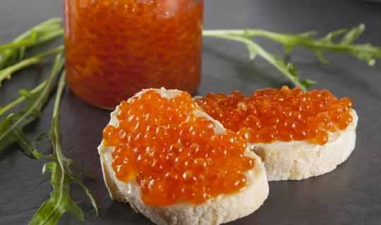

Что такое рыбья икра и какая она бывает


Рыбья икра на Руси издавна считалась украшением стола (особенно ценили чёрную и белую). Ещё в XIX веке её не только солили, но и варили в уксусе или «маковом молочке» (так называли отжатую кашицу из заваренных зёрен мака), запаривали в глиняных горшках, подавали к печеной картошке, добавляли в постные блины вместо яиц , а вместе с рыбой - в солёную похлёбку-«калью» вместо мяса. Знаменитый английский мореплаватель Джеймс Кук, посетив в 1778 году русское поселение на острове Уналашка, писал: «Я ел приготовленное русскими
китовое мясо, а икра, сбитая вроде сухого пудинга, служит им вместо хлеба; настоящего
хлеба имеют очень мало и им лишь лакомятся».
Икру ценят не только за изумительный вкус, она ещё и удивительно полезна. В ней много белка - около 30% протеинов, которые практически полностью усваиваются организмом (для белков животного происхождения это редкость). Кроме того, она содержит массу полезных аминокислот, минералов, витамины А, С и D, фолиевую кислоту. Именно поэтому икру прописывают беременным женщинам, детям и больным людям.
К сожалению, из-за ухудшающейся год от года экологии и варварских действий браконьеров, истребляющих как лососевых, так и осетровых рыб, икры становится все меньше. Остается одна надежда - на разработку новых методов ее получения, например, когда икру достают из рыбы, не убивая ее. Согласитесь, приятно сочетать гурманство с гуманностью.
По материалам Сайтов : http://supercook.ru/ , http://icra2006.org/ , http://www.sibrybalka.ru/ и других источников Интернет ...
- Что такое рыбья икра .
- Какая бывает икра.
- Черная икра (белужья, осетровая, севрюжья, стерляжья) .
- Красная, лососевая икра .
- Розовая икра .
- Частиковая икра .
- Белая икра — улиточная .
- Ежиная икра — икра морских ежей .
- Икра минтая .
- Икра палтуса .
- Икра трески .
- Икра щуки .
- Икра летучей рыбы .
- Имитированная икра — икра искусственная, суррогатная .
- Как выбирать икру .
- Применение икры .
- Из истории икры в кулинарии.
- Примеры сервировки икры.
- Несколько кулинарных рецептов с икрой.
- Рыбьи молоки.